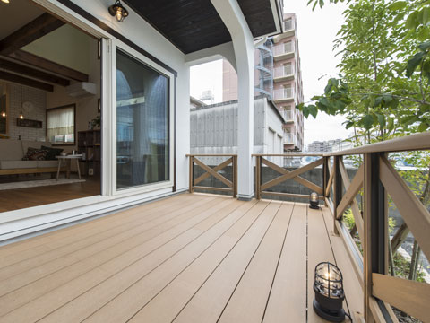

- ホーム
- よくあるご質問
Faqお客様からよくいただくご質問をご紹介

豊中市で注文住宅をつくるココロホームが、自然素材を使用した健康住宅についてのよくあるご質問にQ&A形式でお答えします。こちらに記載されていない内容でご質問がある方は、お気軽に当社までご質問ください。
- Q1無料相談会ではどんな相談にのっていただけますか？
- A1まずは住まいに対するお客様のご要望をお聞かせください。資金計画・土地探しからご相談に対応いたします。初めての家づくりのポイントや大切なお話しをさせていただき、ご提案いたします。
- Q2天然素材を使うとメンテナンスの手間がかかりますか？
- A2水廻りなどは1年に1回ほどのメンテナンスを行うことをおすすめしますが、一般的な住宅と同程度のメンテナンスでまったく問題ありません。
- Q3注文住宅を建てるのにいくらぐらいかかりますか？
- A3注文住宅はお客様のご要望に合わせてつくりますので、ご要望の内容によってコストも大きく変わります。まずはできるだけ詳しいご要望をお聞かせください。
- Q4土地を持っていないのですが、土地の紹介もお願いできますか？
- A4はい、ご要望に合わせた土地のご紹介が可能です。土地に関するご要望もぜひお聞かせください。
- Q5自然素材以外の素材を使った住宅もできますか？
- A5もちろん可能です。自然素材だけでは対応が難しい箇所もありますので、適材適所でご提案します。
- Q6相談会に行ったら契約する必要がありますか？
- A6いいえ、相談会であり契約を強制するようなことは一切ございません。まずはご要望などお話ください。
- Q7対応エリアはどこですか？
- A7豊中市を中心（北摂エリア/池田市・茨木市・吹田市・摂津市・高槻市・箕面市・島本町・豊能町・能勢町）としたエリアが基本的な対応エリアとなります。もちろん、それ以外のエリアであっても対応できますので、お気軽にご相談ください。